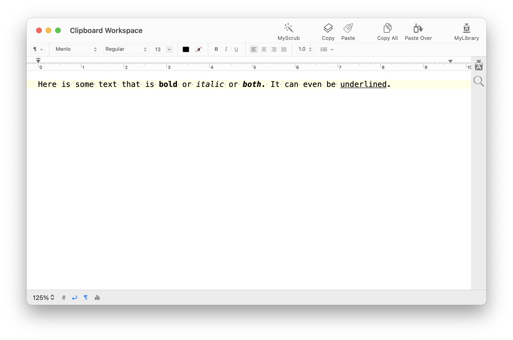
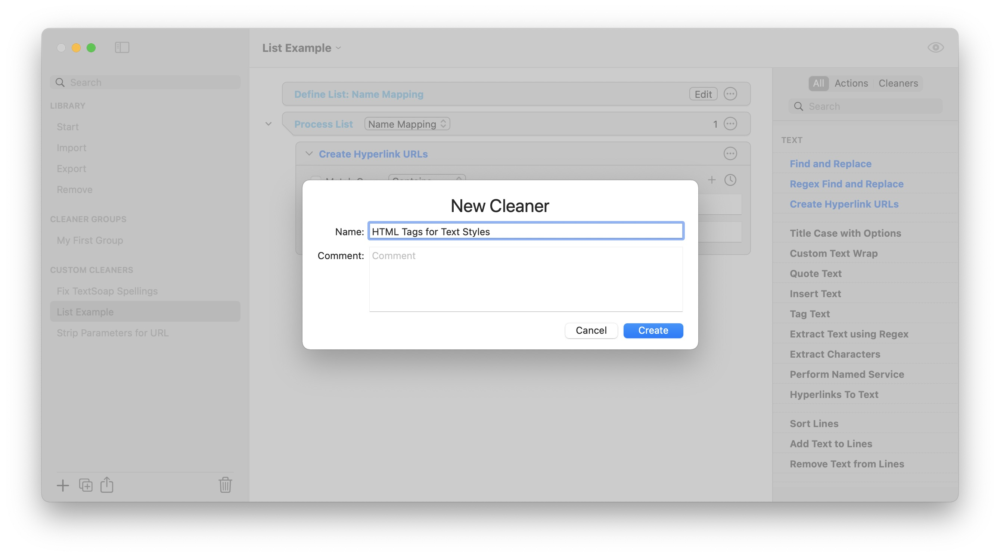
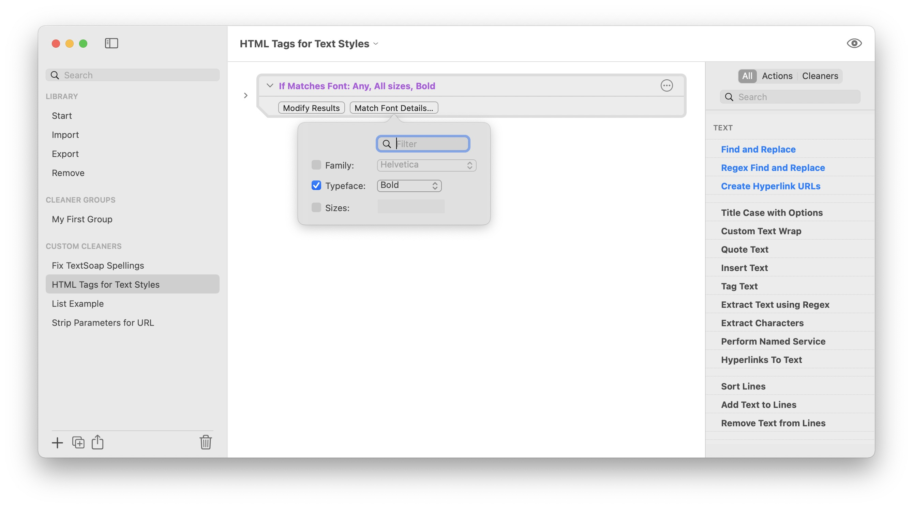
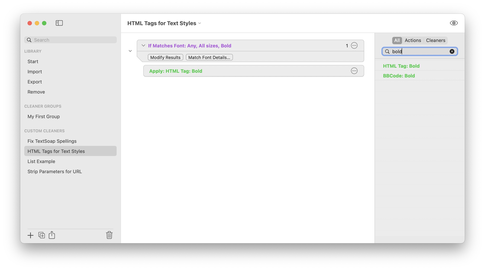
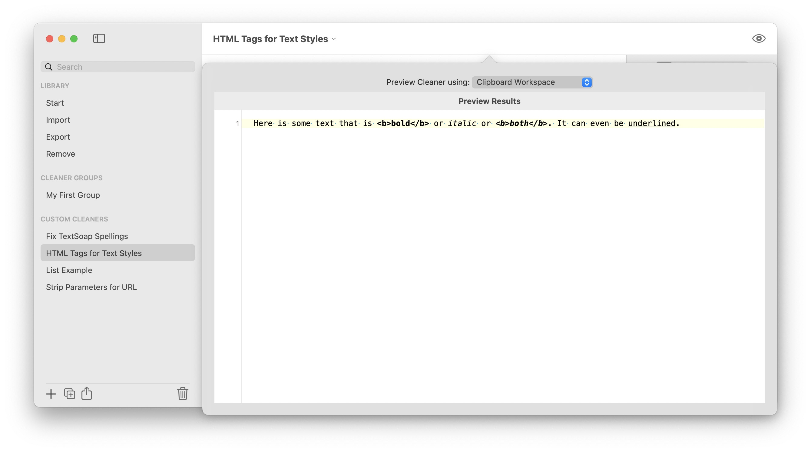
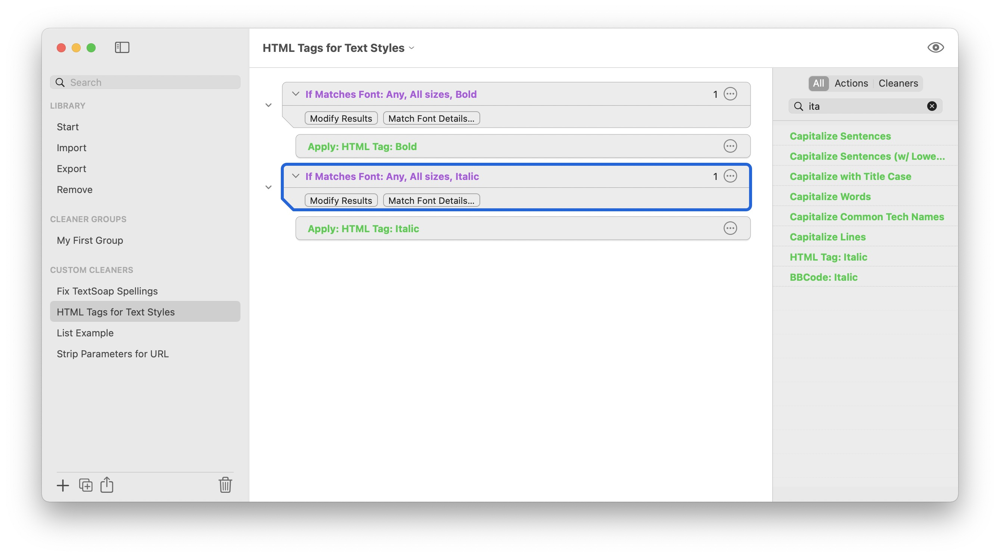
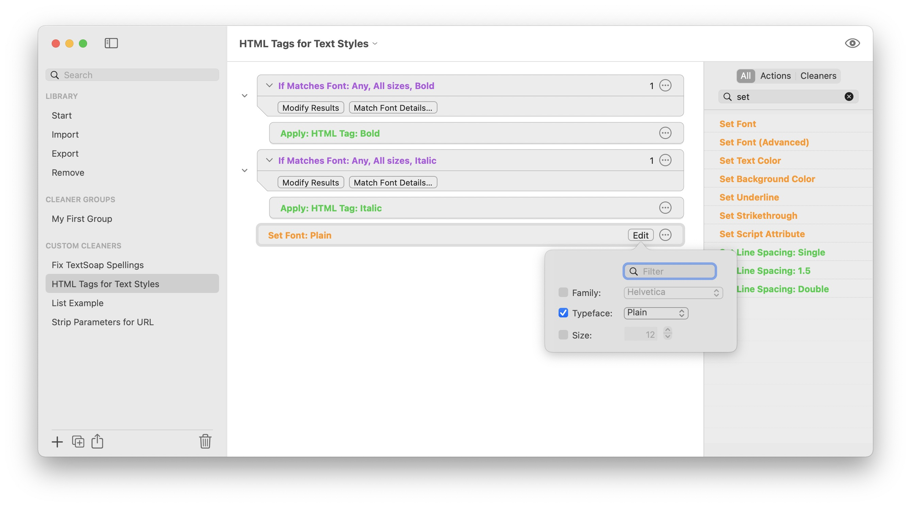
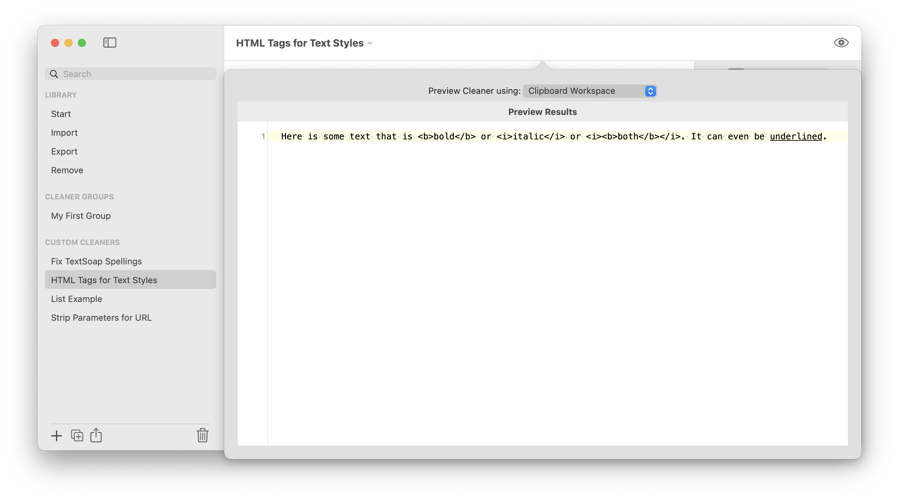
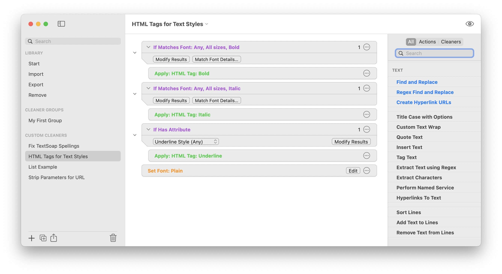
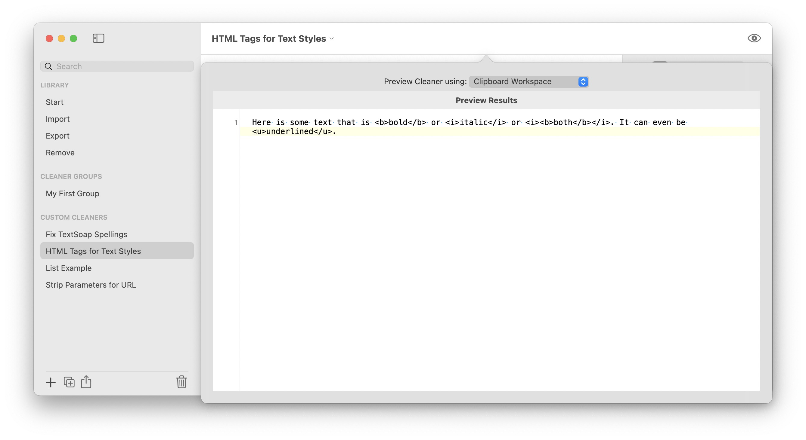

Matching Typefaces, Attributes
Tutorial
TextSoap is great for finding and replacing text, but you can also change text based on its style attributes.
In this tutorial, we will use conditionals to match text with specific character style and then change the underlying text.
We will focus on a common request, converting bold and italic text to text with specified HTML tags.
Sample text:
Here is some text that is bold or italic or both. It can even be underlined.

Start by creating a new cleaner called “HTML Tags for Text Styles”

Tagging Bold Text
To match bold text, start by adding If Matches Font action. The action matches specific font family, typeface (like bold, italic) and size as specified.
This is a category of actions known as Conditionals. With it, you can match a subset of the text, then perform a series of actions on that subset. Since we are looking for bold text, we select the “Typeface” option and select “Bold”.

We’ll apply the cleaner HTML Tag: Bold to any found bold text.
Tip: To easily add cleaners to a conditional, select the conditional, then double-click on the action or apply cleaner you wish to embed. This will add the action at the end of the list inside the conditional.

Alternate: You could use “HTML Tag: Strong” instead, as needed.
Now you can test it with the sample text:

Tagging Italic Text
Next, we do a similar thing for italicized text. Add a new If Matches Font action, check Typeface, then select Italics and embed the apply cleaner action HTML Tag: Italic or alternatively, HTML Tag: Emphasized.

And test it again to see both italic text and bold text are tagged.

Finish by making the text plain, removing any bold or italic font. Add Set Font action to the end of the action list. Then select Typeface, then Plain option.
Plain is a special option which removes any other typefaces. Finally, test the results with the sample text.

You can similarly search for underline style using the If Has Attribute. Each conditionally only works on that specific text.

